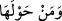
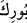
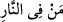

8. Oraya geldiğinde şöyle seslenildi: Ateşin bulunduğu yerdeki ve çevresindekiler
mübarek kılınmıştır! Âlemlerin Rabbi olan Allah, eksikliklerden münezzehtir!
“Oraya geldiğinde” Mûsâ (a.s.) o ateşin yanına geldiğinde, yeşil ağaçtan
yakmayan/yakma özelliği olmayan bir nur yayıldığını gördü. Bir rivâyete göre diğer
ateşler gibi yakıcı bir ateşti. O ağaç semure ağacı idi. “Şöyle seslenildi:” Ona nidâ
geldi ki o Tûr tarafından işitilen sözdür.
Arâisü’l-beyân’da der ki: Mûsâ (a.s.) hâlinin başında aşk ve muhabbet
makamındaydı. Mükâşefe hallerinin çoğu iltibâs makamındaydı. Mûsâ (a.s.)’ın keşfinin
ortaya çıkma zamanı gelince Allah Teâlâ, ağacı ve ateşi fiili bir ayna yaptı. Zâtından
celâli ve cemaliyle Mûsâ (a.s.)’a tecellî etti. Korkmaması için de onu insan şeklinde
bıraktı, ateş ve ağaca yaklaştırdı. Celâlini müşâhedeyi ona keşfettikten sonra ağaçtan
ona nidâ etti. Şâyet böyle olmasaydı, Allah’ın azamet ve izzetinin şiddetle zuhûr ettiği
ilk anda Mûsâ (a.s.) yok olurdu.
“Ateşin bulunduğu yerdeki ve çevresindekiler mübârek kılınmıştır!”
“Mübârek” kendisinde hayır ve bereket olan demektir.
“__WORD__ ateşin bulunduğu yerdekiler demektir. Burası, “o mübarek yerdeki vâdînin
sağ kıyısından, (oradaki) ağaç tarafından kendisine şöyle seslenildi...” (el-Kasas,
28/30) âyetinde zikredilen mübârek yerdir.
“__WORD__ ateşin bulunduğu yerin etrafındakiler demektir. Zâhiren anlaşılan, mübârek
kılınmanın bu vâdîdeki herşey; peygamberlerin gönderildiği, yaşadıkları ve öldükleri
yer olduğu için pek çok bereketlere sâhip olarak tanınan etrafındaki Şam toprakları ve
özellikle de Allah Teâlâ’nın Mûsâ (a.s.) ile konuştuğu yer hakkında genel olmasıdır.
Allah Teâlâ’nın Mûsâ (a.s.)’a bu hitapla söze başlaması mübârek toprakların, yâni
Şam’ın her tarafına berekâtı yayılacak büyük bir dînî vazifenin kendisi için takdir
edilmiş olduğunun müjdesiydi. Bu ise Allah Teâlâ’nın onunla konuşması, onu kendisi
için peygamber seçmesi ve onun elinde mûcizeler ızhâr etmesidir.
Her nerede Hakk’ı müşâhede ve O’nunla mükâleme/konuşma zuhûr ederse, orası
bereketli bir yer olur. Görmez misin şâir ne demiş:
Selmâ bir vâdiye indiğinde; onun suyu,
Tatlı ve devamlı; otu da gül olur.
Melik ve Müteâl olan Allah ile olan hallerinin bereketi sebebiyle sahralarda ve
dağlarda ricâlullahın, ayaklarını bastıkları yerler yeşerir olmuştur.
Bazı müfessirler, “__WORD__ lafzını selâmlama olarak yorumlamıştır. Nitekim Kâşifî bu
lâfzın mânâsı hakkında “Bereket verilmiş olsun.” der.
Yine bazıları “__WORD__ (ateşin içindekiler)” ifâdesini melekler olarak tefsir etmiştir.
Çünkü Mûsâ (a.s.)’ın gördüğü nûrun/ışığın içinde tesbih ve takdis sesleri işitilen
melekler vardı. “__WORD__ (ateşin etrafında olan)” ifâdesini ise Mûsâ (a.s.) olarak